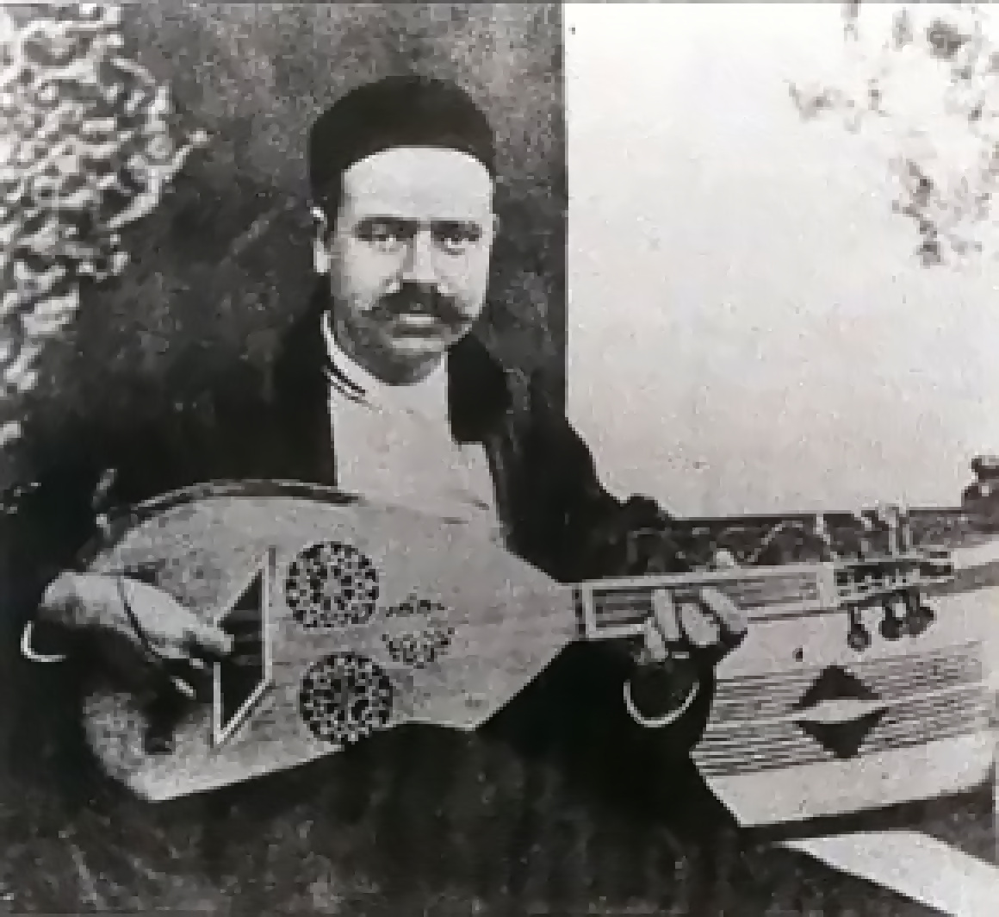

1894 – 1964 · Bizerte
Fondateur · Chanteur · Oudiste
Khemaïs Tarnane
خميس ترنان — Père de La Rachidia
Voix tutélaire du Malouf tunisien, Khemaïs Tarnane est l'un des cofondateurs de La Rachidia (1934), l'institution qui codifiera le répertoire pour les générations suivantes. Issu d'une lignée andalouse, il forge son art dans les cafés de la Médina avant de devenir le maître incontesté du chant classique tunisien. Il compose pour Saliha et Naâma les œuvres maîtresses qui définissent l'esthétique du Malouf moderne.